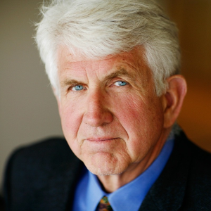
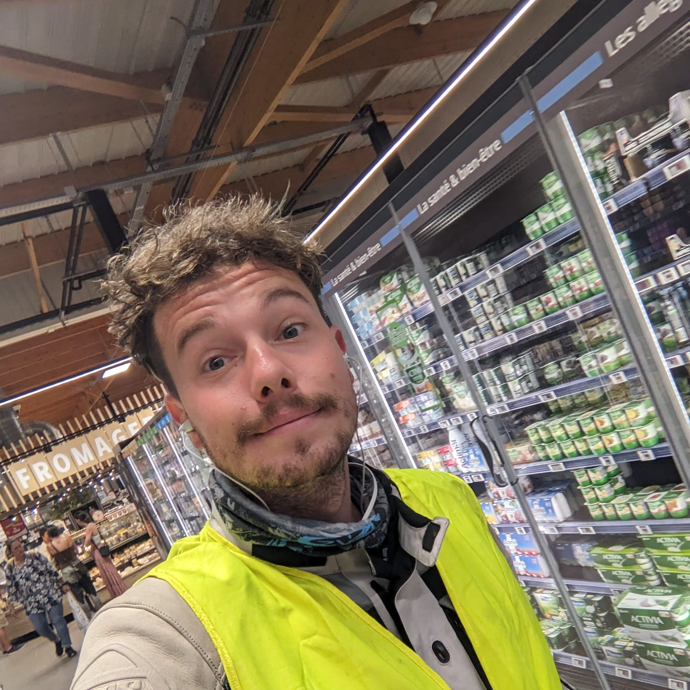

Geothermal
Arrays
Home
Research
GeoRFCs
GitHub
People
People
The GeothermalArrays group is part of the
MIT Julia Lab
within MIT CSAIL.
Current members
Alan Edelman
Principal Investigator · Professor of Applied Mathematics
MIT Julia Lab, CSAIL & Department of Mathematics

Bob Metcalfe
Research Affiliate · ACM Turing Award Laureate
MIT Julia Lab
Emmanuel Lujan
Research Scientist
MIT Julia Lab, CSAIL
Andrew Inglis
Venture Builder & Research Collaborator
MIT Proto Ventures · MIT Earth Resources Laboratory

Collin Wittenstein
Visiting Master's Student
MIT Julia Lab
Jason Chen
Graduate Student · PhD in Mechanical Engineering
MIT
Alumni
Edwin Otieno Ouko
Former Master's Student
MIT Julia Lab